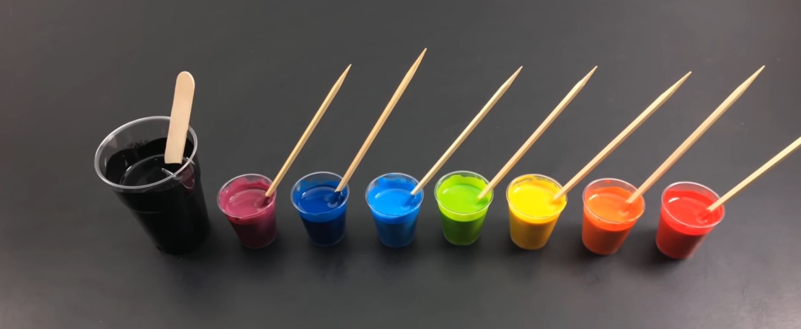
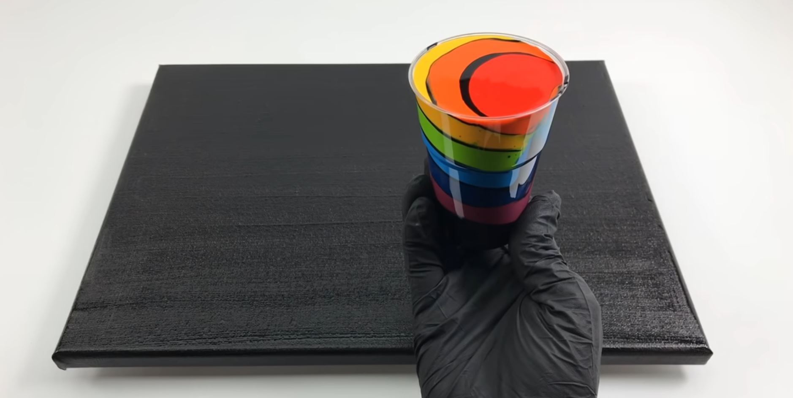
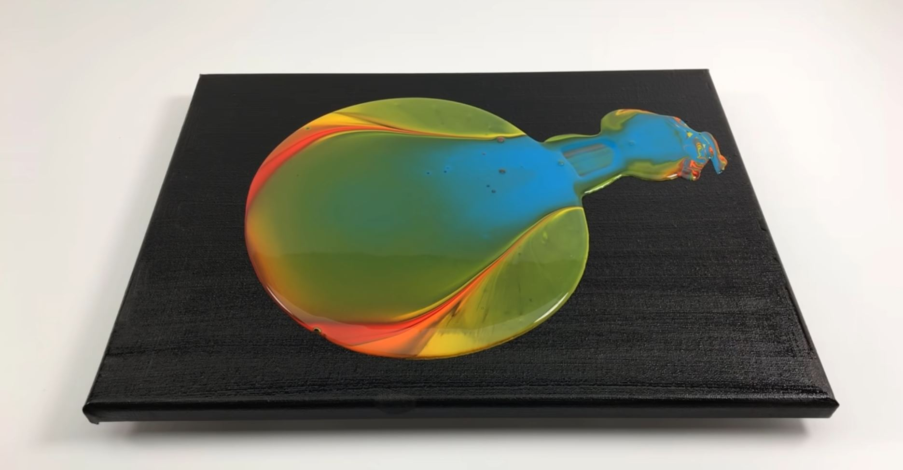

Homepage
Fletcher Henderson
Creative Coding Week 9
supplies
- acrylic paint
- canvas
- pouring medium
- heat gun or torch
- scale
- disposable cups
- popsicle sticks
- silicone
Directions
-
Using the scale pour equal parts water, acrylic paint, and pouring medium. Repeat this for each color you
want in your piece and vary size based on how many colors you want and how prevalent you wish each one to be.
-
Now repeat the first step but use at least twice as much paint, water, and medium as you used in any previous color.
This will be your base and should be white or black depending on what you are looking for, other colors could work but
risk taking over the painting so make sure it goes with everything and is fairly neutral.
-
Mix each cup thoroughly using the popsicle sticks.
OPTIONAL:
add a drop or two of silicon to every color but the base to increase cell count

-
After each color is mixed take another cup or container(larger if possible, if not repeat this step with multiple cups) and
gently pour the paint in layers based on your preference until the cup or cups are full. You don't have to use your base in
this process but it does help keep the colors from blending, if you choose to use your base in this step only pour very
small layers so the non base colors don't make as much contact.

-
Once all your paint is layered in a cup or cups pour a decent amount of your base onto the canvas, tilt the canvas or spread
the paint to ensure the canvas is decently covered with a couple millimeters of paint (precision doesn't really matter here)
now slowly pour the layered paint onto the base, this can be done by holding the cup in one spot and letting it all fall and
push from one spot which will make a more circular pattern or you can move the cup around while pouring(again precision doesn't
really matter that much just don't go crazy)

-
Now very lightly pass the torch or heat gun over the paint to release bubbles but be careful not to burn any paint, keep it fast
and distant especially if you are using a torch.
-
Finally let the paint rest very briefly (2-3 minutes) before picking up your canvas and tilting it to fill the space and stretch
out or remove certain designs that formed. During this a lot of paint will fall off the canvas just be careful you don't want everything
to fall off, just enough that the whole thing is covered and you are happy with the result.
-
Now cover and let dry somewhere that it won't get stuck due to the excess paint that will drip from it for about 24 - 36 hours and
you did it!
about
contact us